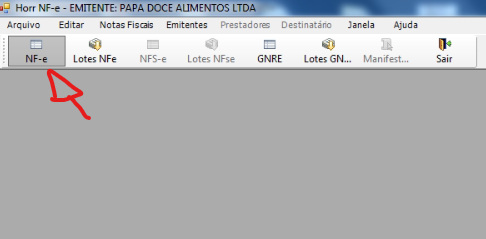

Emissão de Nota Fiscal Eletrônica (NF-e)
Atenção!
Esse passo a passo está partindo do ponto em que o pedido já foi realizado, não está em negrito e está com sua Forma de pagamento correta, ou seja, Nota Fiscal/Simples ou Nota Fiscal/Boleto
Se o pedido ainda não foi realizado ou tem duvidas sobre as formas de pagamento acesse como realizar pedido no Industrial
Acesse a pagina de conferencia de pedido pelo menu de navegação Venda -> Pedido -> Conferência de Pedido (Integrados)

Clique duas vezes para abrir o pedido que deseja conferir:

OBS: em casos de haver muitos pedidos, você pode usar os filtros do numero do pedido ou data para facilitar a busca
Após abrir o pedido irá aparecer todos os produtos que foram adicionados ao pedido. Você deve seguir os seguintes passos:
▪️ Clicar no botão "Liberar campos"
▪️ Selecionar todos os produtos até que todos fiquem marcados (☑️)
▪️ Preencher no campo "Volume" a palavara "CAIXA"
▪️ Preencher no campo "qtd" o número 1.
▪️ Por fim clique em SALVAR

Para gerar um Romaneio aperte a tecla F2 no teclado ou acesse Faturamento -> Expedição -> Romaneio
Em seguida clique no botão de novo Romaneio (icone de uma folha de papel) localizado no canto superior esquerdo da tela:

Depois tecle F8 para carregar todos os pedidos que já foram conferidos e que ainda não estão em um romaneio.
Selecione o seu pedido
E clique em SALVAR no botão no canto superior esquerdo (üíæ)

Atenção!
Se por um acaso estiver dois pedidos diferentes do mesmo cliente o sistema seleciona automaticamento os dois pedidos independentemente de qual você tenha selecionado.
Se isso acontecer, filtre poelo numero do pedido nos campos de filtro a cima e aperte F8 para carregar novamente, assim aparecerá apenas o pedido desejado na lista.
Ao abrir a janela de salvamento do Romaneio basta colocar alguma descrição do romaneio, pode ser o nome do cliente do pedido.
E clique em OK

Para gerar a Nota FIscal acesse Faturamento -> Nota Fiscal -> Geração

Em seguida tecle F8 para carregar todos os romaneios gerados.
Selecione o Romaneio que voce acabou de gerar no passo anterior.
E clique em SALVAR no botão no canto superior esquerdo (üíæ).
OBS: você pode visualizar pela observação que voce colocou ao gerar o romaneio para ter certeza que está gerando o romaneio correto

ATENÇÃO! Se a Nota Fiscal for a vista (Nota Fiscal/Simples) a nota será gerada e aparecera esse aviso:

Se a Nota Fiscal for com Boleto (Nota Fiscal/Boleto) o sistema vai perguntar nesse momento em qual impressora será impresso os boletos:
Então se por algum motivo você não conseguir imprimir o boleto neste momento, acesse Reimpressão de boletos para ver como reimprimir.
Abra o aplicativo Horr Nfe em seu computador:

Clique no botão NF-E no canto superior esquerdo:
Em seguida precione F8 para carregar as Notas Fiscais que foram gerados pelo Industrial.
Selecione o pedido que deseja emitir a nota.
Clique em Validar no canto superior esquerdo

Em seguida abrirá uma notificação do sistema perguntando se deseja Transmitir a nota: Clique em SIM:
Em seguida Clique em Lotes NFe no canto superior esquerdo:
Depois clique em Carregar e logo em seguida em Consultar:
Atenção!
Se o retorno do lote for "Autorizado o uso da NF-e" é por que a nota não teve nenhum tipo de erro e já pode ser impressa.
Porém se aparecer algum erro escrito em vermelho no retorno do lote, você deve acessar Coreeção de erros de NF-e para trata-lo antes de imprimir a nota.
Clique no botão NF-e novamente:

Depois Clique no botão DANFE

E para finalizar, basta clicar no botão imprimir e selecionar a impressora: